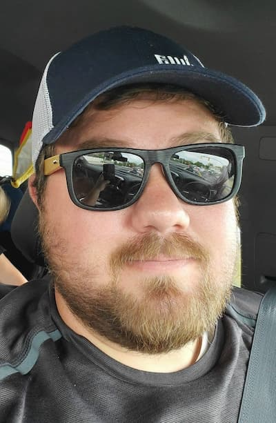

Anthony Christensen | WWD 130
Not much to say about myself. I run a landscaping buisness with my father, and work for Murray School District as a bus driver. Besides working I play Video games with my son (11), and sleep. Favorite video game that i play is Destiny on the xbox. Served my mission in Canada Calgary mission. It was cold but i loved the people and the time i spent. Yes, it was very cold. I remember my eyes sealing shut due to how cold it was at times. Still a lot of fun. I started dating my wife after i came home and about 2 years later we got married. We got married in the Salt Lake Temple and have never looked back. Its been a rollercoater ride but wouldnt change it. We only have 2 kids but we are good with the two we have. A boy and a girl is all we need. I dont know what else to say but i need more to make this page look good.